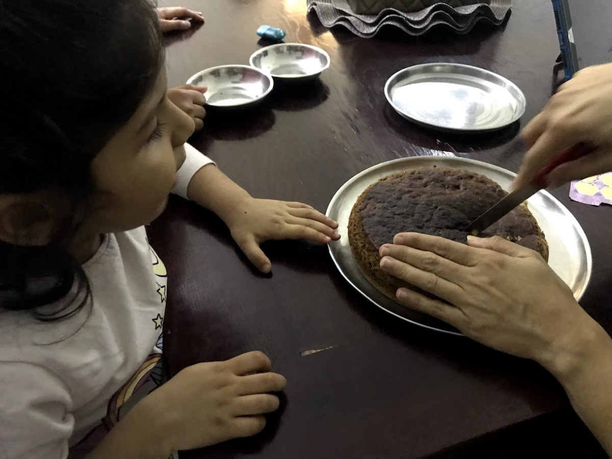
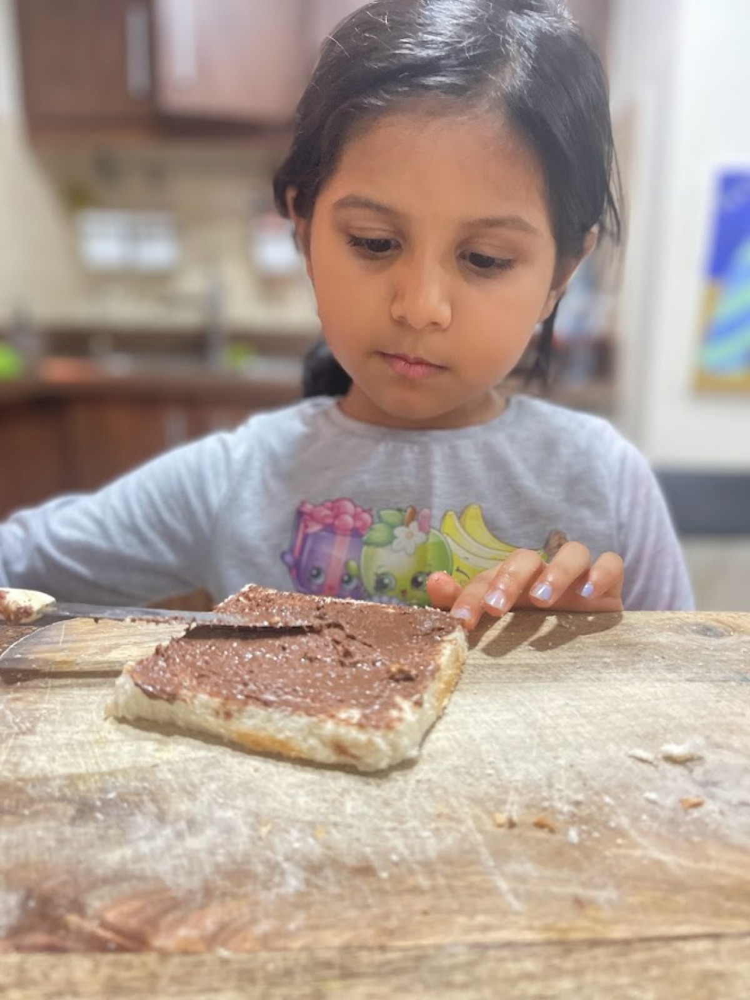
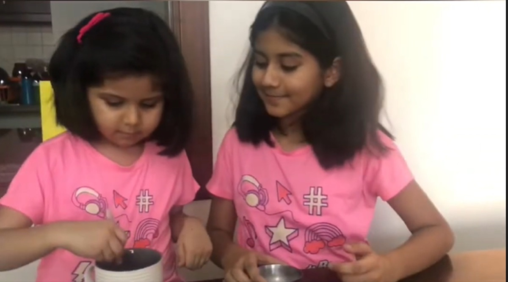

When I think about learning to bake, I don't think it started with a cake. Honestly? It started with a piece of bread and a jar of Nutella.
It started with much smaller things. Standing in the kitchen. Helping my mum. Doing little things with my sister. Making my own snack. Spread Nutella on bread without needing anyone to do it for me.
None of it felt important at the time. They were just things I was doing in the kitchen. Looking back, they were probably the beginning of me actually becoming comfortable there.
Nothing About It Was As Easy As It Looked
I used to think baking was mostly about following a recipe. Get the ingredients, mix everything together, put it in the oven, wait. Simple, right?
Not really.

The more I started doing things myself, the more I noticed how many small things could go wrong. Sometimes the batter didn't look the way it was supposed to. Sometimes something came out too dry. Sometimes the temperature wasn't right, and no matter how carefully I thought I'd followed everything, I'd open the oven and find something that had gone a little too far.
There were burnt cakes. There were batches that didn't turn out the way I'd imagined. There were moments I was sure I'd done everything correctly and still couldn't explain what had gone wrong.
But that's also when I started actually learning.
My mum and my sister never made me feel like I'd ruined something. If a bake didn't work, they'd explain what probably happened and remind me that this was just part of it — you don't really know how something works until you've tried it yourself, and sometimes you only understand it after getting it wrong first. That's stuck with me more than almost anything else from those years.
My First Solo Mission: The Nutella Snack
One of the simplest things I remember doing entirely on my own was making myself a snack — just bread and Nutella.

It sounds like such a small thing now. But spreading it on completely by myself, without waiting for someone to step in and help, felt like a genuinely big deal at the time. I wasn't baking anything complicated. I wasn't measuring ingredients or worrying about oven temperatures. I was just making my own snack.
But that's exactly why it mattered. It made the kitchen feel less like a place where I only watched other people, and more like somewhere I could actually do things myself. Once I was comfortable with the small stuff, I wanted to try more.
Then Came the Mug Cake
One of the best parts of learning was getting to do it with my sister.

We made a one-minute chocolate mug cake together, and somehow it turned into more than just something to eat — we filmed the whole thing too. There was something genuinely fun about putting everything into one mug, mixing it together, and watching it actually turn into cake in the microwave. Quick, a little messy in its own small way, and a lot less intimidating than the oven.
Because we were doing it together, it never felt like I had to get it perfect. We were just making it. The chocolate chips at the end were never optional — that part is still non-negotiable for me.
Watch my sister and I make this one — chocolate chips non-negotiable!
1-Minute Chocolate Mug Cake (A Throwback!)
Fast, fun, and extra chocolate chips are non-negotiable!
We had so much fun filming this one. The best part about mug cakes is that you mix everything straight into the mug, so there's hardly any cleanup. We used normal sugar here, but you can easily swap it for a sugar-free alternative. And my number one rule for this recipe — right before you eat it, you have to add extra chocolate chips on top to make it extra yummy.
Sometimes you need a chocolate fix, and you need it fast. This is a throwback recipe from a few years ago that I made with my sister. It takes exactly one minute in the microwave, and it's the perfect quick treat when you don't want to wait for the oven to heat up.
What You Need
The Ingredients
- Flour
- Cocoa powder
- Sugar (or sugar substitute)
- Baking powder
- Melted butter
- Milk mixed with a little vanilla essence
- Chocolate chips, for topping
The Toolkit
- A microwave-safe mug
- A spoon for mixing
Let's Get Baking
The dry mix: add your flour, cocoa powder, sugar, and baking powder straight into your favourite mug.
The wet mix: pour in the melted butter and the milk, with the vanilla essence already mixed in.
Stir it up: use your spoon to mix everything together until it's a smooth, chocolatey batter.
Microwave: put the mug in for exactly one minute.
The finishing touch: take it out carefully — it will be hot — sprinkle your chocolate chips on top so they melt, and dig in.
What I Learned
That not every bake needs an oven, or half an hour, or a big cleanup afterward. Sometimes the simplest version of something is the one you actually reach for again and again.
I Started Doing More Without Thinking So Much About It
After a while, being in the kitchen didn't feel like such a big thing anymore. I helped more. I tried things myself. Sometimes it was with my sister, sometimes with my mum, sometimes I'd just take over one small part of whatever we were making.
I got comfortable with the small stuff first. Mixing. Measuring. Getting ingredients ready. Figuring out how much was actually enough. Cleaning up when things got messy, which was often.
And slowly, I started understanding that baking wasn't just about how the final thing looked. There was a whole process behind it, and most of that process happened before anyone ever saw the result.
The Mess Was Part of Learning
Some days everything worked. Other days, almost nothing did.
I'd get the batter wrong. I'd misread a step. Something would bake faster than I expected, or the temperature wouldn't be right, and I genuinely wouldn't be able to tell you what I'd done differently. Those were the frustrating days.
But my parents always helped me see them differently. Baking takes time, they'd say. You can't expect to know everything right away. Mistakes happen even when you're trying your best — and making something that doesn't turn out well isn't a reason to stop. It's a reason to figure out what happened. Maybe the oven ran too hot. Maybe I'd mixed it too much. Maybe I just needed to wait a little longer next time.
Baking, I started to realise, asks for a lot more than just following instructions. It needs patience. It needs attention. It needs practice, and it needs you to accept that the first attempt might not be the one you were hoping for.
Baking Wasn't Just Difficult. It Was Creative.
The more comfortable I got, the more I noticed something else — baking wasn't only about getting everything exactly right. There was room to make things my own too. More chocolate here, a different topping there, trying something a little differently just to see what happened.
But you have to know the basics before you can really play with them. First I had to learn to follow the recipe. Then I had to understand why each step mattered. Eventually, a recipe started to feel less like a rulebook and more like a starting point.
I don't think I became comfortable in the kitchen all at once. It happened through small things — a piece of bread covered in Nutella, a mug cake made with my sister, helping my mum, trying something myself, making a mess, getting it wrong, trying again.
My parents never expected me to get everything right. They just wanted me to keep learning. So I did. I kept trying, kept getting things wrong sometimes, and slowly stopped being afraid of that.
Because somewhere along the way, I understood:
"The mess wasn't getting in the way of learning. The mess was how I was learning."